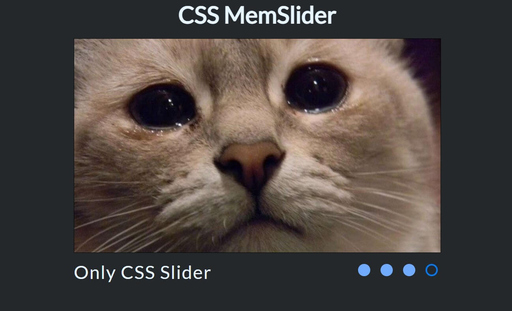

Лобанова Мария. Портфолио
Привет. Меня зовут Мария,
и я Front-end Developer_
Занимаюсь програмированием с 2019 года.
Мои работы

shelter
online-zoo
pomodoro timer

Only CSS slider
Стек технологий
Html
Семантическая разметка HTML5
Создания форм и их валидация
CSS
Flexbox / Grid
Респонсив и адаптивный дизайн
Mobile First и Desktop First подход
JavaScript
ES6+ синтакс
DOM манипуляции
ООП / Функциональный подход
БЭМ
Создание HTML разметки в соответствии с БЭМ методологией
SASS
Препроцессор CSS, добавление вложенных правил, переменных, миксинов, селектор родителя и многое другое
Git
Умение работать с основным функционалом и репозиторием git